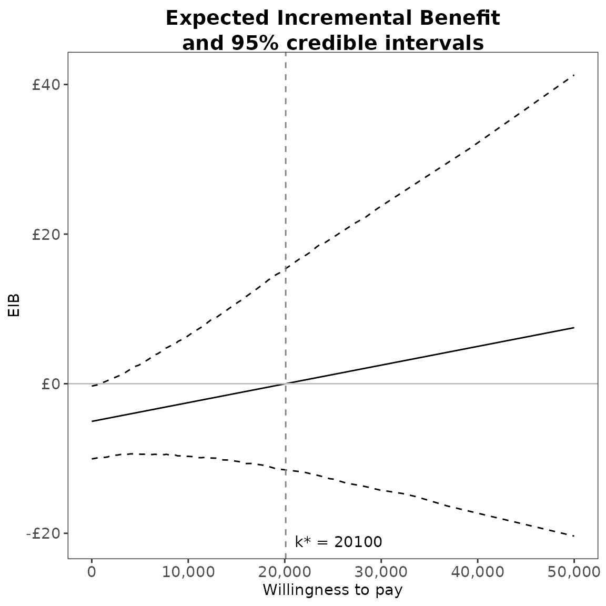
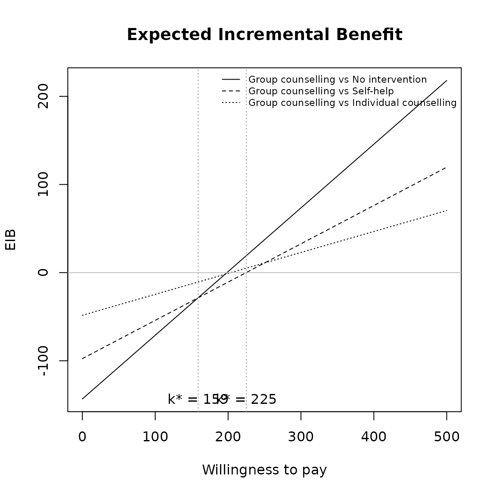
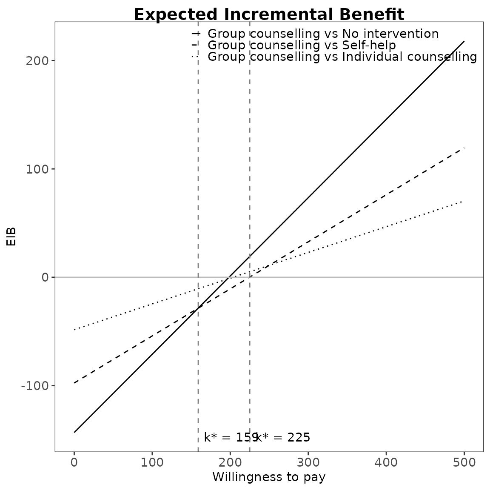
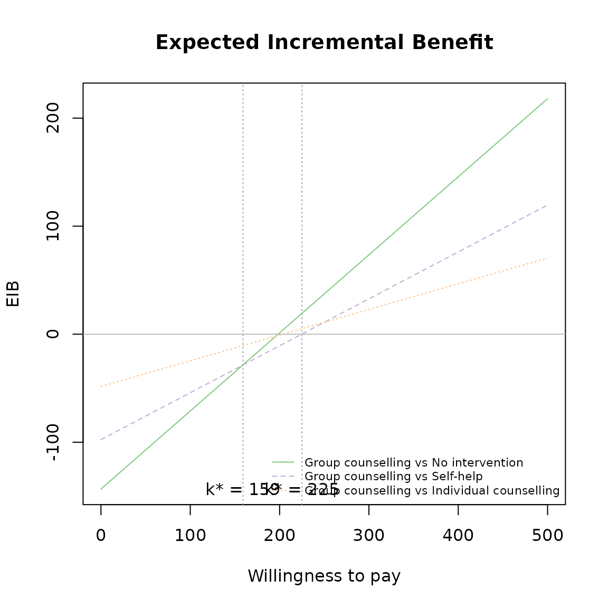
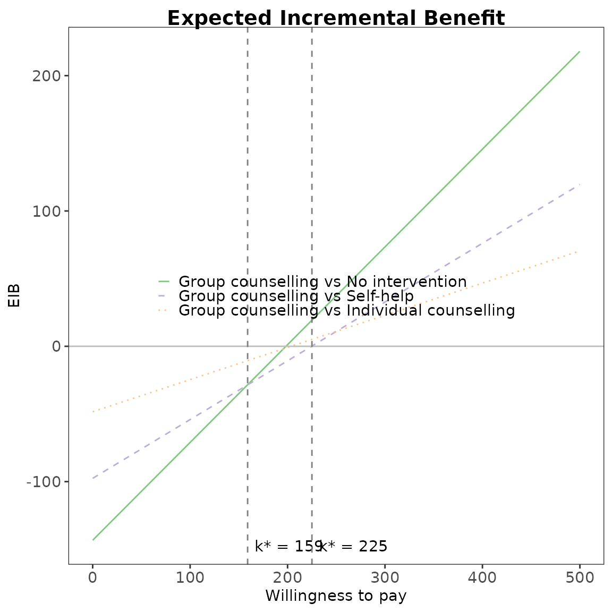

Introduction
The intention of this vignette is to show how to plot different styles of expected incremental benefit (EIB) plots using the BCEA package.
Two interventions only
This is the simplest case, usually an alternative intervention () versus status-quo ().
The plot is based on the incremental benefit as a function of the willingness to pay .
Using the set of posterior samples, the EIB is approximated by
where is the realised configuration of the parameters in correspondence of the -th simulation.
R code
To calculate these in BCEA we use the bcea()
function.
The plot defaults to ggplot2 R plotting. Type of plot
can be set explicitly using the graph argument. In fact,
the default graphical engine is set upon loading BCEA and
can be modified globally using the command
options(bcea.graph="..."). Choices are
ggplot2, base or plotly. Partial
matching is also available, so that gg, g,
pl or p are recognised alteratives to
ggplot2 or plotly, respectively.
eib.plot(he)
The vertical line represents the break-even value corresponding to indicating that above that threshold the alternative treatment is more cost-effective than the status-quo.
This will be at the point the curve crosses the x-axis.
eib.plot(he, graph = "base")
eib.plot(he, graph = "ggplot2")
# ceac.plot(he, graph = "plotly")Other plotting arguments can be specified such as title, line colours and theme.
eib.plot(he,
graph = "ggplot2",
main = "my title",
line = list(color = "green"),
theme = theme_dark())
Credible interval can also be plotted using the plot.cri
logical argument.
eib.plot(he, plot.cri = FALSE)
In the ggplot2 implementation, it is possible to modify
the formatting of the numerical labels in the
and
axis using ggplot2 failities, such as in the following
code.
# Resets the formatting on the x-axis to simple numbers
eib.plot(he) + scale_x_continuous()
#> Scale for x is already present.
#> Adding another scale for x, which will replace the existing scale.
# Uses currency style with £ symbol
eib.plot(he) + scale_y_continuous(labels=scales::dollar_format(prefix="£"))
Multiple interventions
This situation is when there are more than two interventions to consider. Incremental values can be obtained either always against a fixed reference intervention, such as status quo, or for all comparisons simultaneously.
The curves are for pair-wise comparisons against a status-quo and the vertical lines and k* annotation is for simultaneous comparisons.
Without loss of generality, if we assume status quo intervention , then we wish to calculate
The break-even points represent no preference between the two best interventions at .
Only the right-most of these will be where the curves cross the x-axis.
R code
This is the default plot for eib.plot() so we simply
follow the same steps as above with the new data set.
data(Smoking)
treats <- c("No intervention", "Self-help",
"Individual counselling", "Group counselling")
he <- bcea(eff, cost, ref = 4, interventions = treats, Kmax = 500)
eib.plot(he)
For example, we can change the main title and the EIB line colours to green.


Credible interval can also be plotted as before. This isn’t recommended in this case since its hard to understand with so many lines.
eib.plot(he, plot.cri = TRUE)
Repositioning the legend.
For base R,
eib.plot(he, pos = FALSE, graph = "base") # bottom right



For ggplot2,



Define colour palette for different colour for each EIB line.
mypalette <- RColorBrewer::brewer.pal(3, "Accent")
eib.plot(he,
graph = "base",
line = list(color = mypalette))
